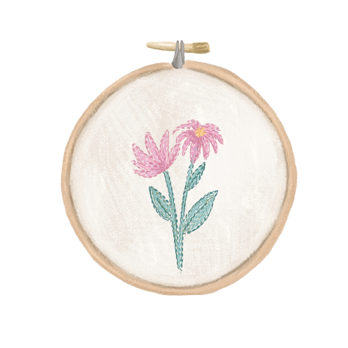

Bordado livre
pastelila_id
Materiais: o que você precisa para começar a bordar
O bacana do bordado livre é que não são necessários muitos materiais para começar as criações. Os itens são básicos, não custam caro e são fáceis de encontrar. Acompanhe:
Linha de meada: a linha meada, também chamada mouline, é a mais comum para esse tipo de bordado. No entanto,você também pode usar outros tipos, como linha de costura tradicional. Agulhas costura: é necessário usar uma agulha que espete, já que o bordado livre não costuma ser feito em tecidos com furinhos. As agulhas de costura de número 7 e número 9 são bons investimentos iniciais.
Tesourinha de costura: a tesoura será necessária para cortar os fios. Não é preciso ser uma tesouraespecial, desde que esteja com bom corte e tenha ponta fina. Tecido de algodão cru: baratinho, ele costuma ser escolhido por ser neutro e ter uma leve goma, o que deixa o tecido mais firme.
Bastidor: embora não seja imprescindível para o bordado livre, o bastidor costuma ser bastante utilizado.Existem modelos de plástico e de madeira – esse último fica lindo para decorar a casa.
Acessar post completoComo escolher desenhos para bordar?
Para escolher um bom desenho, você pode usar a sua imaginação para pensar em algo que queira ilustrar com o uso das linhas (por isso o bordado livre é tão divertido) ou também utilizar uma ilustração pronta e passar para o tecido com carbono, lápis ou caneta fantasma. Dessa forma, é possível fazer vários bordados incríveis mesmo sem saber desenhar.
Para seus primeiros bordados, escolha desenhos simples, que mostrem o que você quer transmitir com a sua arte, e que te permita treinar os primeiros pontos.
Acessar post completo